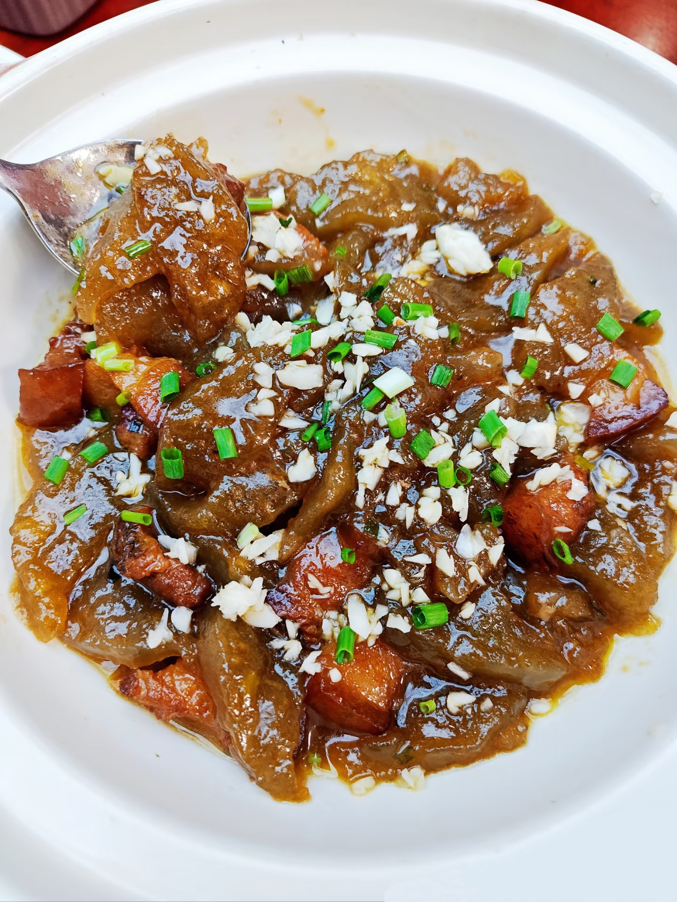
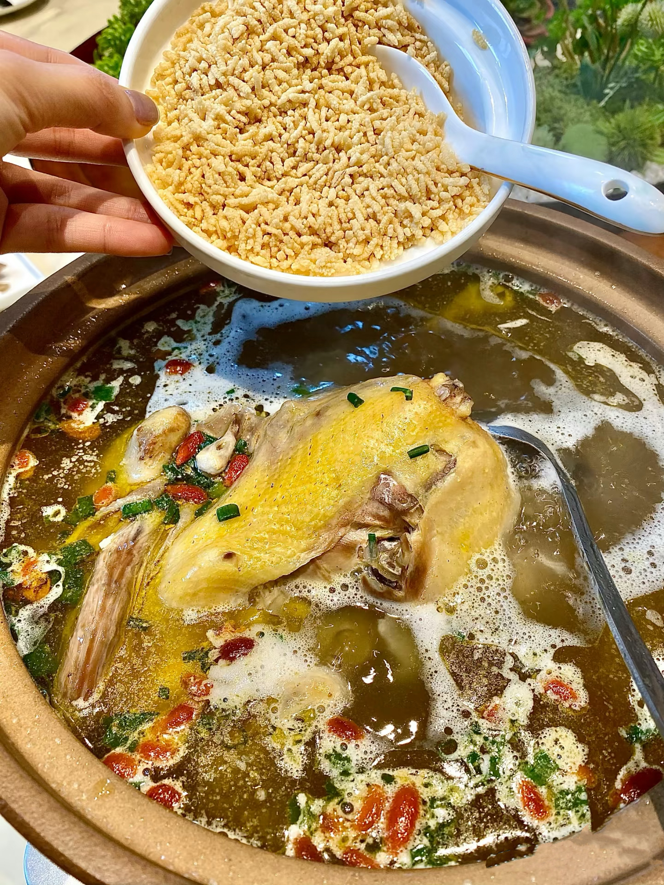

潍坊美食简介
安庆地处长江中下游平原，河湖众多，物产丰富，为美食提供了丰富的食材。 如太湖香酥鸭选用本地特有的麻鸭，潜山臭鳜鱼选用当地新鲜鳜鱼，枞阳媒鸭则是枞阳县的特产鸭子。 米面制品丰富：安庆的主食类美食丰富多样，不仅有以优质大米为原料制作的怀宁米粉、望江糯米饭，还有用面粉制作的宜秀板面、侉饼等。 咸鲜为主：安庆美食以咸鲜口味为基础，讲究食材的原汁原味。如鸡汤泡炒米，用慢炖的鸡汤搭配香脆炒米，突出鸡汤的鲜美；山粉圆子烧肉，肉的咸香与山粉圆子的软糯结合，味道醇厚。口味多变：在以咸鲜为主的基础上，安庆美食也有麻辣、香辣、酸甜等多种口味。 如安庆牛肉面，有麻辣、香辣、清汤等多种口味可供选择。